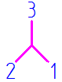

Displaying the center of mass or coordinate system on a drawing
For model files in which mass properties have been calculated, you can show the center of mass or volume in a drawing view. You can place a dimension to this point, and you can use QuickPick to locate the connect relationship associated with it.
You also can display the model base coordinate system or a user-defined coordinate system in a drawing view.
When the center of mass or coordinate system is shown in a drawing view, its location is marked by a point. As an alternative representation, Solid Edge provides the following block graphics:
The name of this block is COM. It is included in draft document templates. It is listed on the Library tab, when the Show Blocks button is selected, under Active Document.
Using custom center of mass and coordinate system symbols
You also can create blocks with custom graphics. You can create one block for the center of mass and another to represent the coordinate system. Then you can use the Annotation tab in the Solid Edge Options dialog box to assign these blocks to be displayed whenever the center of mass or a coordinate system is shown in a drawing view.
Custom center of mass symbols based on different drawing standards:
A user defined coordinate system symbol:

Assigning a line style when the center of mass is displayed as a point
If you prefer to mark the location with a point, you can specify a line style for it using the new option, Center of Mass and Coordinate System edge style. This option is available in two locations:
-
The Edge Display tab in the Solid Edge Options dialog box.
-
The Drawing View Defaults dialog box.
The default line style is set to Visible. To improve the visibility of a point, for example, you can define a unique line style that displays the point in a different color.
How do I
Create a blockDefine a custom center of mass or coordinate system for drawings
Display a coordinate system or center of mass in a drawing view
Look up more details
Select Block dialog boxDrawing View Display Defaults dialog box
Edge Display tab (Solid Edge Options dialog box)
Annotation tab (Solid Edge Options dialog box)